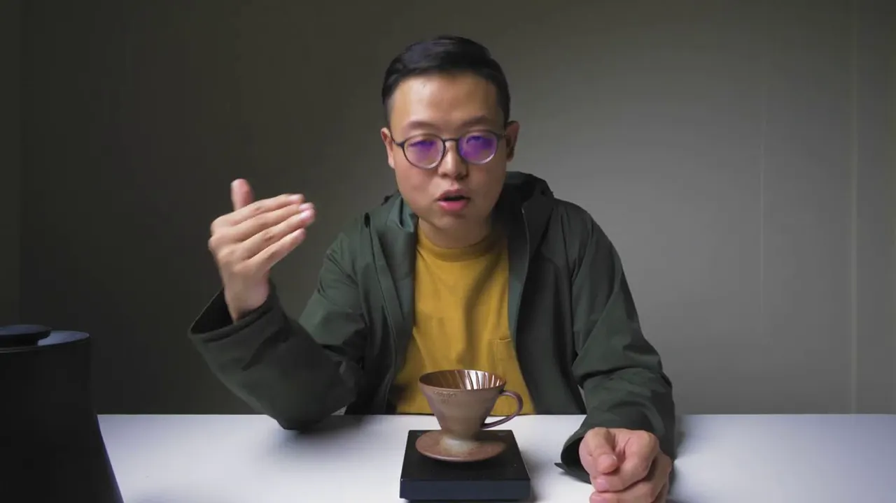

一個人，把咖啡頻道從零做到 9 萬多訂閱From zero to 90k, as a team of one
VVcafe 是咖啡器材電商。2018 年我接手公司的 YouTube 頻道「VVcafe by 學長」，到 2023 年離職，幕後只有我一個人：企劃、拍攝、剪輯，一週更新 1～2 支。VVcafe sells coffee gear online. In 2018 I took over its YouTube channel, VVcafe by 學長, and until I left in 2023 I was the whole team behind the camera: planning, shooting and editing, one or two videos a week.

結果數字In numbers
- 離職時的訂閱，從零開始（2023/09）Subscribers when I left, from zero (09/2023)
- 9萬+90k+
- 最多人看的一支Views on the most-watched video
- 49.4萬494k
- 蝦皮流量，跟我入職前比Shopee traffic, against before I joined
- +15%+15%
- 手沖咖啡學營收，很多學員從頻道來Pour-over course revenue, many students from the channel
- NT$200萬+NT$2M+
當時的問題The problem
- 電商需要流量The online store needed traffic
- 咖啡器材要先教會人怎麼用，才賣得動Coffee gear only sells once people know how to use it
- 品牌沒什麼人認識，創辦人也還沒有知名度Few people knew the brand, or its founder
- 頻道 2016 年就開了，但還沒有在經營The channel had been there since 2016, with nothing on it yet
我的做法What I did
觀眾Audience
從新手到咖啡店From beginners to cafés
在家手沖的新手、想升級器材的人、專業咖啡玩家、小型咖啡店家Home brewers starting out, people upgrading their gear, serious coffee hobbyists and small coffee shops
內容Content
跟著需求和話題走Led by demand
照市場需求和咖啡話題的熱度規劃。主力是〖咖啡沖煮攻略〗和〔學長開箱〕，另外有硬派 90 秒和直播回顧。Planned around what people wanted and which coffee topics were hot. Two main series, brewing guides and unboxings, plus 90-second deep dives and live-stream replays.
製作Production
幕後只有一個人A team of one
鏡頭前是創辦人「學長」，品牌和人一起被認識。企劃、拍攝、剪輯都是我，一週更新 1～2 支。The founder hosts on camera, so the brand and the person become known together. Planning, shooting and editing were all mine, one or two videos a week.
銷售Sales
影片接到商品頁Videos that lead to the shop
資訊欄放商品連結和折扣碼，蝦皮的商品頁也放影片Product links and discount codes in the descriptions, and the videos on the Shopee product pages
結果What happened
- 2023/09 我離職時，頻道有 9 萬多訂閱。之後我繼續接案替頻道做影片，2026/11 是 10.6 萬。When I left in 09/2023 the channel had over 90,000 subscribers. I have kept making its videos as a freelancer since, and it stands at 106,000 in 11/2026.
- 熱門前 10 名都是〖咖啡沖煮攻略〗，每支 20～49 萬次觀看。沖煮是大家都想知道的知識。All ten of the most-watched videos are brewing guides, at 200,000 to 490,000 views each. Brewing is what everyone wants to know.
- 蝦皮流量跟我入職前比，+15%Shopee traffic rose 15% against before I joined
- 手沖咖啡學（PressPlay）的學員很多是從頻道來的，課程營收 NT$200 萬+Many students of the pour-over course on PressPlay came from the channel, and the course earned over NT$2M
三支代表影片Three of the videos
頻道最多人看的三支，點開就能看The three most-watched, ready to play